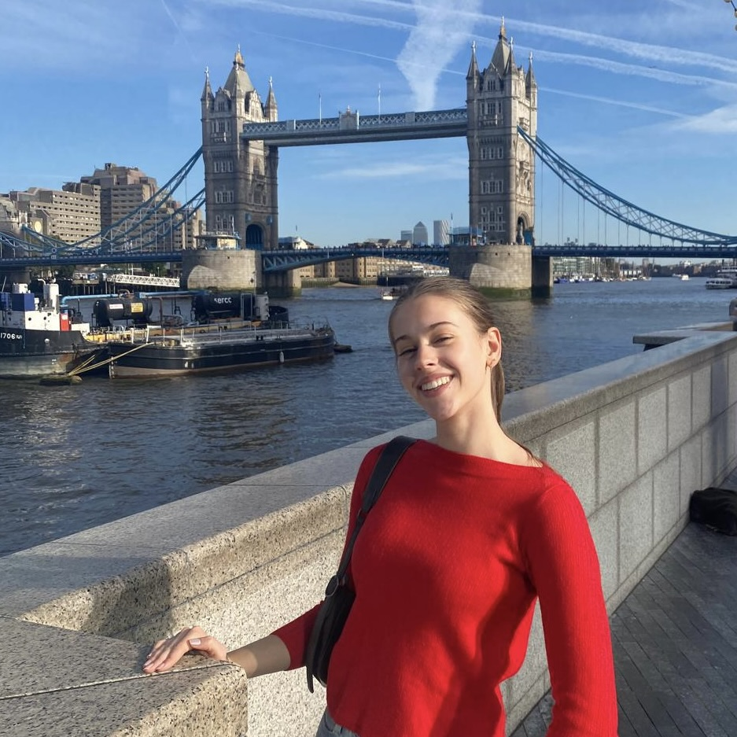

Over mij
Mijn naam is Tess Wieman. Ik ben 2e jaars student Communication Multimedia Design (CMD) aan de Hogeschool van Amsterdam.
Vaardigheden
Klasgenoten omschrijven mij in de volgende woorden:
- verantwoordelijk,
- zelfstandig,
- creatief,
- overtuigend,
- ondernemend,
- betrouwbaar
- zorgvuldig &
- openhartig.
In mijn vrije tijd vind ik het leuk om creatief bezig te zijn. Zo schilder ik graag en probeer ik met nieuwsgierigheid nieuwe technieken uit. Zo ben ik bezig geweest met: waterverf, olieverf, pen en potlood tekenen, houtskool, acrylverf, en 3D kunst met modeleer-pasta.
Ambities
Welke richingen wil ik kiezen?
In mijn derde profileringsblok heb ik ervoor gekozen om de technische kant verder te ontdekken met Project Tech. Project Tech is een profilering-vak binnen CMD. Het doel van dit project is om kennis van web development te verbreden en te verbeteren. Ik heb Project Tech gekozen, omdat het mij interessant en uitdagend leek en ik denk van belang bij iedere richting binnen dit vak. Maar ik heb zeker ook interesse in de vormgeving en creatieve kant. Echter vind ik het nog moeilijk om deze met elkaar te combineren.